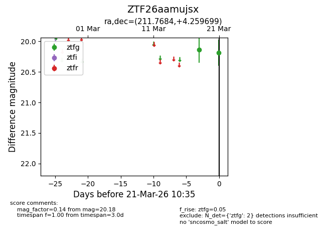
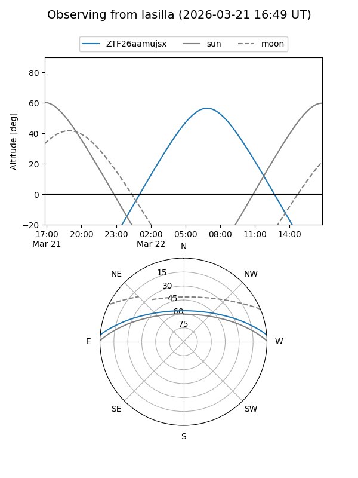
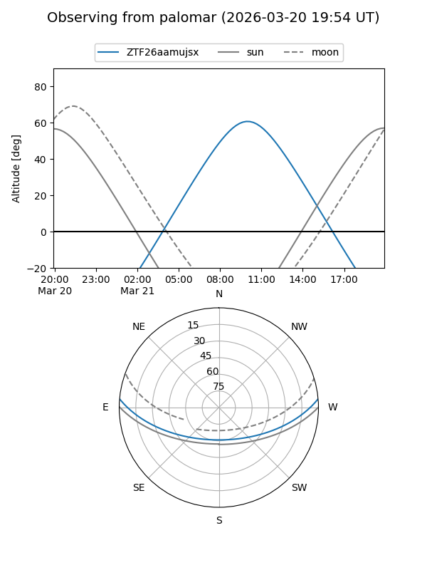

ZTF26aamujsx
Target ZTF26aamujsx at 2026-03-21 10:37
Aliases and brokers:
FINK: link
Lasair: link
ALeRCE: link
alt names
ZTF26aamujsx (ztf,fink_ztf)
Coordinates:
equatorial (ra, dec) = 211.7684,+4.25970
equatorial (HMS+DMS) = 14:07:04.41,+04:15:34.92
galactic (l, b) = (344.5253,+60.86835)
Flags:
Photometry:
last ztfg=20.18
2 ztfg detections
Lightcurve

Visibility


Additional plots